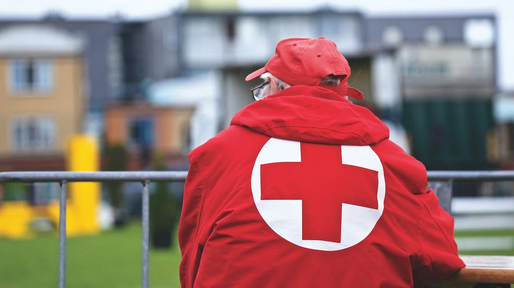
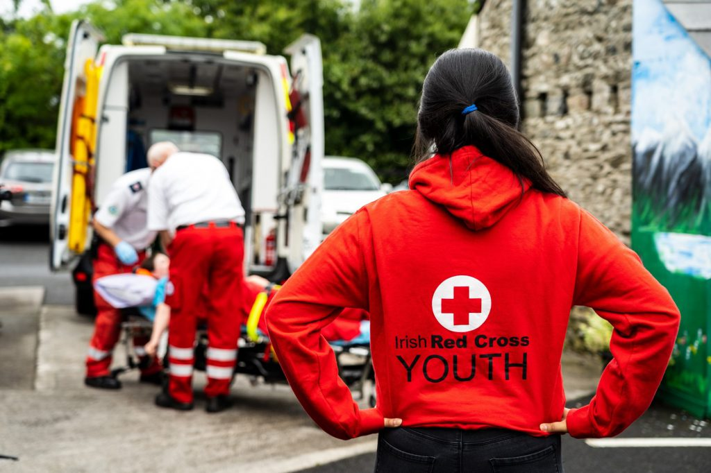
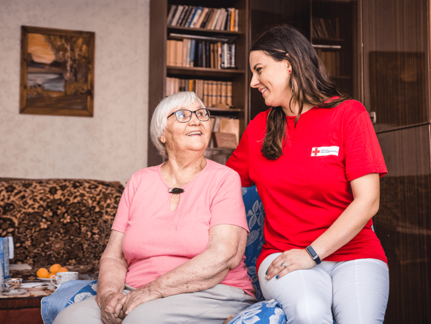
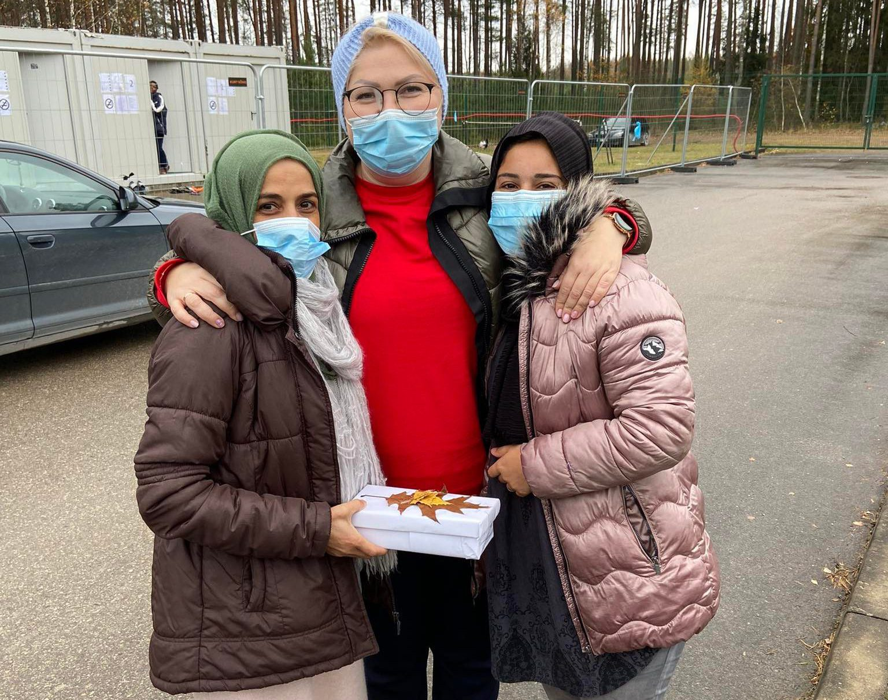
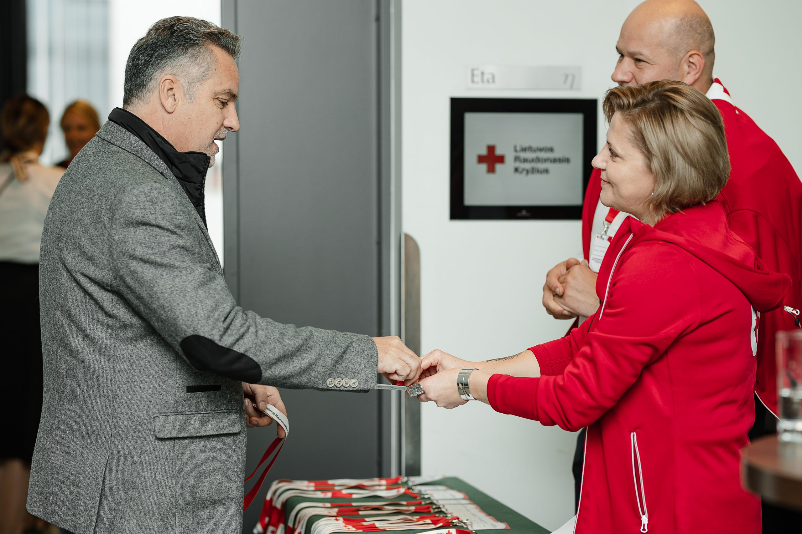
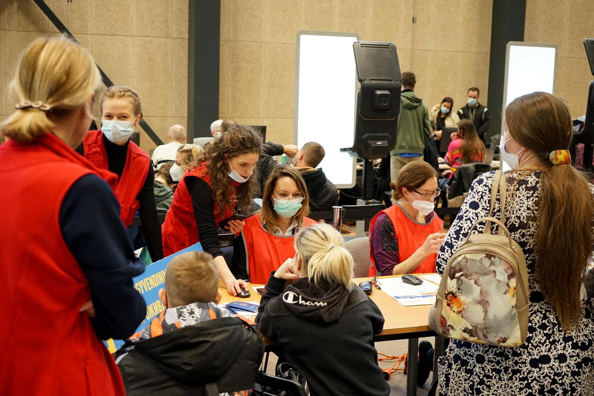
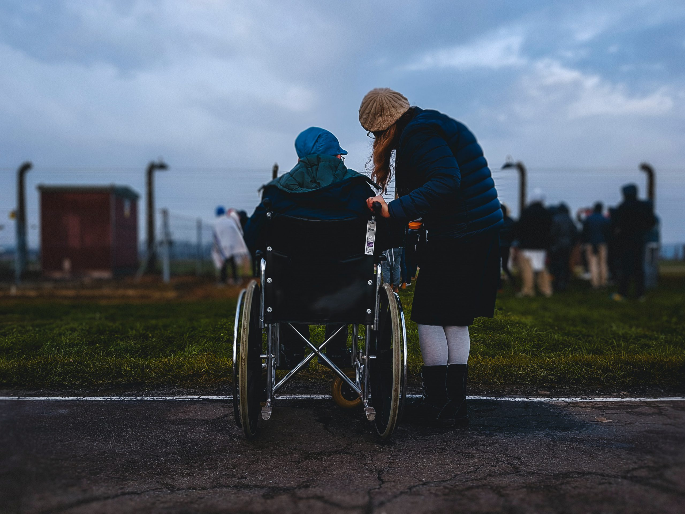

Lietuvos Raudonasis Kryžius

Tai viena seniausių ir didžiausių nevyriausybinių organizacijų Lietuvoje, priklausanti Tarptautiniam Raudonojo Kryžiaus ir Raudonojo Pusmėnulio judėjimui, kurį sudaro 192 šalyse veikiančios Nacionalinės draugijos, Tarptautinio Raudonojo Kryžiaus ir Raudonojo Pusmėnulio Federacija bei Tarptautinis Raudonojo Kryžiaus Komitetas. Lietuvos Raudonasis Kryžius yra valstybės ir žmonių pagalbininkas, kurio tikslas apsaugoti žmonių gyvybes ir orumą, teikti pagalbą nelaimės ištiktiems žmonėms Lietuvoje.
Savanorystė
Jei paklaustum aplinkinių, kas yra savanoris, išgirstum panašius atsakymus, jog tai žmogus, savo noru atliekantis įvairias veiklas. Tačiau juk savo noru padedi šeimai, draugams ir paprastiems praeiviams gatvėje, o galiausiai niekieno neverčiamas rūpiniesi savo sveikata ar laisvalaikiu, bet ar gali vadintis savanoriu?
Norint tapti savanoriu, būtinos dvi sąlygos: asmuo turi būti apsisprendęs skirti savo laiką visuomenei ir jos reikmėms, nesitikint jokio piniginio atlygio, ir antroji - asmuo turi atrasti kitą asmenį ar organizaciją, kuriai reikalinga savanorio pagalba. Prisidėti prie pagalbos kitiems, gali aukodamas pinigus arba darydamas gerus darbus savomis rankomis - tavo, kaip rėmėjo arba savanorio pagalba, mums labai svarbi.
Jei norite prisijungti prie šaunios Lietuvos Raudonojo Kryžiaus savanorių komandos, Jums siūlome įvairias galimybes.
Jaunimo programa

Šioje programoje veikiantys jaunuoliai turi puikią galimybę realizuoti savo turimas idėjas ir kalbėti apie jiems reikšmingas temas - klimato kaitą, įvairovę ir lygybę, kartų bendradarbiavimą ir pan.
Plačiau →
Šilti Apsilankymai

Norėdami spręsti senjorų vienišumo problemą, sukūrėme programą „Šilti apsilankymai”. Ji skirta vienišiems, daugiausiai vyresnio amžiaus žmonėms, dėl sveikatos ir kitokių kliūčių retai išeinantiems iš savo namų, neturintiems artimų žmonių rato, jaučiantiems bendravimo stoką.
Plačiau →
Prieglobsčio ir migracijos programa

Prieglobsčio ir migracijos programoje savanoriauti pasiūlymų ras ir suaugusieji, ir vaikai. Rinkitės reguliarią arba nereguliarią savanorystę ir prisidėkite prie užsieniečių geresnės emocinės savijautos, orumo užtikrinimo ir spartesnės integracijos Lietuvoje.
Plačiau →
Administracinė veikla

Esi socialinių tinklų herojus? O gal renginių organizavimas yra tavo pašaukimas? Kviečiame Tave prisijungti prie Lietuvos Raudonojo Kryžiaus savanorių būrio, prisidedant prie administracinės veiklos.
Plačiau →
PES

PES programos tikslas yra tinkamai parengti savanorius, kurie šalyje nutikus nelaimei ir esant ekstremaliai situacijai ar įvykiui, operatyviai reaguotų ir imtųsi tikslingų veiksmų, gebėtų padėti kitiems.
Plačiau →
Stipri šeima

Stiprios šeimos programos tikslas - atliepti negalios paliestų šeimų interesus - padėti ir patiems negalią turintiems asmenims, ir jų artimiesiems
Plačiau →
Atlikti darbai
1 pav. Atlikti darbai skirtinguose Lietuvos miestuose
| Miestas |
Savanorių sk.
| Apgyvendinta žmonių |
Išduoti maisto daviniai |
Aktyvūs projektai |
| Vilnius |
26543 |
325 |
6666 |
14 |
| Kaunas |
35135 |
515 |
355 |
8 |
| Klaipėda |
5513 |
600 |
444 |
Komentarai
Kontaktai
Skambinkite telefonu: +37065439600
Rašykite eleketroniniu adresu: info@redcross.lt
Sekite mus Facebook, nuoroda: facebook.com/redcross.lt